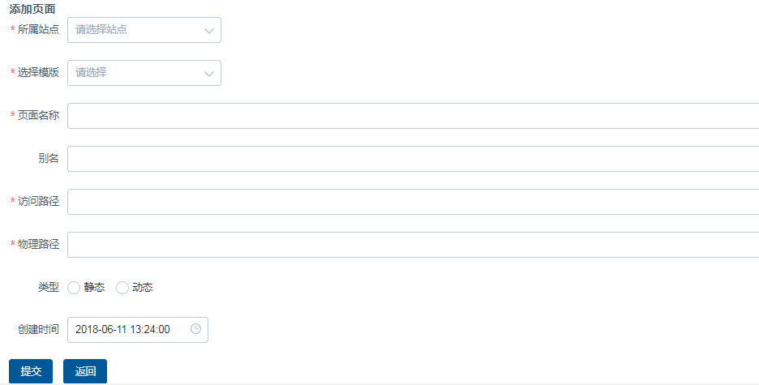
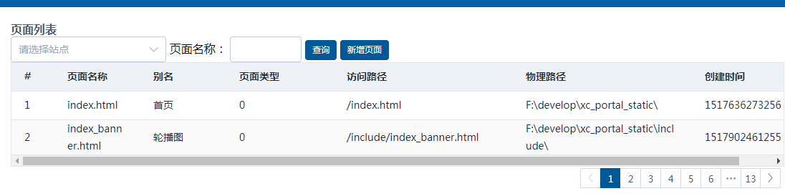
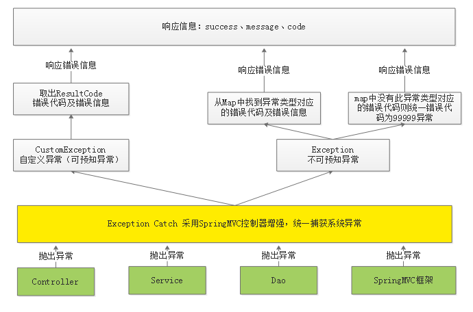

CMS页面管理开发
1 自定义条件查询
1.1 需求分析
在页面输入查询条件，查询符合条件的页面信息。
查询条件如下：
站点Id：精确匹配
模板Id：精确匹配
页面别名：模糊匹配
…
1.2 服务端
1.2.1 Dao
1 | 使用 CmsPageRepository中的findAll(Example<S> var1, Pageable var2)方法实现，无需定义。 |
下边测试findAll方法实现自定义条件查询：
1 | //自定义条件查询测试 |
1.2.2 Service
在PageService的findlist方法中增加自定义条件查询代码
1 | /** |
1.2.3 Controller
无需修改
1.2.4 测试
使用SwaggerUI测试
1.3 前端
1.3.1 页面
1、增加查询表单
1 | <!--查询表单--> |
2、数据模型对象
增加siteList、pageAliase、siteId，如下：
1 | data() { |
3、在钩子方法中 构建siteList站点列表
1 | mounted() { |
1.3.2 Api调用
1、向服务端传递查询条件，修改 cms.js，如下：
1 | //public是对axios的工具类封装，定义了http请求方法 |
2、页面调用api方法
1 | //查询 |
测试如下：
2 新增页面
2.1 新增页面接口定义
1、定义响应模型1
2
3
4
5
6
7
8@Data
public class CmsPageResult extends ResponseResult {
CmsPage cmsPage;
public CmsPageResult(ResultCode resultCode,CmsPage cmsPage) {
super(resultCode);
this.cmsPage = cmsPage;
}
}
2、定义添加Api
在api工程中添加接口：1
2@ApiOperation("添加页面")
public CmsPageResult add(CmsPage cmsPage);
2.2 新增页面服务端开发
2.2.1 页面唯一索引
在cms_page集中上创建页面名称、站点Id、页面webpath为唯一索引
2.2.2 Dao
1、添加根据页面名称、站点Id、页面webpath查询页面方法，此方法用于校验页面是否存在
1 | public interface CmsPageRepository extends MongoRepository<CmsPage,String> { |
2、使用 CmsPageRepository提供的save方法 。
2.2.3 Service
1 | //添加页面 |
2.2.4 Controller
1 | //添加页面 |
2.2.5 接口测试
使用postman测试
post请求：http://localhost:31001/cms/page/add
请求内容为json数据，测试数据如下：
1 | { |
成功响应结果：
失败响应结果：
2.3 新增页面前端开发
2.3.1 新增页面
2.3.1.1 编写page_add.vue页面
使用Element-UI的form组件编写添加表单内容，页面效果如下：

1、创建page_add.vue页面
2、配置路由
在cms模块的路由文件中配置“添加页面”的路由：
1 | {path:'/cms/page/add',name:'新增页面',component: page_add,hidden:true} |
注意：由于“添加页面”不需要显示为一个菜单，这里hidden设置为true隐藏菜单。
测试，在浏览器地址栏输入http://localhost:11000/#/cms/page/add
3、在页面列表添加“添加页面”的按钮
实际情况是用户进入页面查询列表，点击“新增页面”按钮进入新增页面窗口。
在查询按钮的旁边添加：
1 | <router-link class="mui-tab-item" :to="{path:'/cms/page/add/'}"> |
说明：router-link是vue提供的路由功能，用于在页面生成路由链接，最终在html渲染后就是<a标签。
to：目标路由地址
4、完善页面内容：
代码如下：
1 | <el-form :model="pageForm" label-width="80px" > |
Form Attributes说明：
model 表单数据对象
rules 表单验证规则
Form-Item Attributes说明：
prop 表单域 model 字段，在使用 validate、resetFields 方法的情况下，该属性是必填的
label 标签文本
详情属性及事件参考http://element.eleme.io/#/zh-CN/component/form
5、数据对象
1 | data(){ |
6、站点及模板数据（先使用静态数据）
在created钩子方法中定义，created是在html渲染之前执行，这里推荐使用created。
1 | created:function(){ |
7、测试预览
新增页面按钮：
新增页面表单：

2.3.1.2 添加返回
进入新增页面后只能通过菜单再次进入页面列表，可以在新增页面添加“返回”按钮，点击返回按钮返回到页面列表。
1) 新增页面按钮带上参数
1 | <router-link class="mui-tab-item" :to="{path:'/cms/page/add/',query:{ |
说明：query表示在路由url上带上参数
2）定义返回方法
在page_add.vue上定义返回按钮
1 | <el-button type="primary" @click="go_back" >返回</el-button> |
在page_add.vue上定义返回方法
1 | go_back(){ |
说明：this.$route.query 表示取出路由上的参数列表，有两个取路由参数的方法：
1 | a、通过在路由上添加key/value串使用this.$route.query来取参数，例如：/router1?id=123 ,/router1?id=456 可以通过this.$route.query.id获取参数id的值。 |
3）查询列表支持回显
进入查询列表，从url中获取页码和站点id并赋值给数据模型对象，从而实现页面回显。
url例子：http://localhost:12000/#/cms/page/list?page=2&siteId=5a751fab6abb5044e0d19ea1
1 | created() { |
小技巧：使用 ||返回第一个有效值
2.3.1.3 表单校验
1、配置校验规则：
Element-UI的Form组件提供表单校验的方法：
在form属性上配置rules（表单验证规则）
1 | <el-form :model="pageForm" :rules="pageFormRules" label-width="80px" > |
在数据模型中配置校验规则：
1 | pageFormRules: { |
更多的校验规则参考http://element.eleme.io/#/zh-CN/component/form中“表单验证”的例子。
2、点击提交按钮触发校验
1)在form表单上添加 ref属性（ref=”pageForm”）在校验时引用此表单对象
1 | <el-form :model="pageForm" :rules="pageFormRules" label-width="80px" ref="pageForm"> |
2）执行校验
1 | this.$refs.pageForm.validate((valid) => { |
2.3.2 Api调用
1、在cms.js中定义page_add方法。
1 | /*页面添加*/ |
2、添加事件
本功能使用到两个UI组件：
1、使用element-ui的message-box组件弹出确认提交窗口（http://element.eleme.io/#/zh-CN/component/message-box）。
1 | this.$confirm('确认提交吗？', '提示', {}).then(() => {｝） |
2、使用 message组件提示操作结果 （http://element.eleme.io/#/zh-CN/component/message）
1 | this.$message({ |
完整的代码如下：
1 | addSubmit(){ |
下边是测试：
1、进入页面列表页面

2、点击“增加页面”按钮

3、输入页面信息点击“提交”
3 修改页面
修改页面用户操作流程：
1、用户进入修改页面，在页面上显示了修改页面的信息
2、用户修改页面的内容，点击“提交”，提示“修改成功”或“修改失败”
3.1 修改页面接口定义
修改页面需要定义的API如下：
1 | @ApiOperation("通过ID查询页面") |
说明：提交数据使用post、put都可以，只是根据http方法的规范，put方法是对服务器指定资源进行修改，所以这里使用put方法对页面修改进行修改。
3.2 修改页面服务端开发
3.2.1Dao
使用 Spring Data提供的findById方法完成根据主键查询 。
使用 Spring Data提供的save方法完成数据保存 。
3.2.2Service
1 | //根据id查询页面 |
3.2.3Controller
1、根据id查询页面
1 | @Override |
2、保存页面信息
1 | @Override |
3.3 修改页面前端开发
3.3.1 页面处理流程
页面的处理流程如下：
1、进入页面，通过钩子方法请求服务端获取页面信息，并赋值给数据模型对象
2、页面信息通过数据绑定在表单显示
3、用户修改信息点击“提交”请求服务端修改页面信息接口
3.3.3 修改页面
3.3.3.1 编写page_edit页面
修改页面的布局同添加页面，可以直接复制添加页面，在添加页面基础上修改。
下边编写页面内容：
1、编写page_edit.vue
页面布局同添加页面，略。
2、配置路由
进入修改页面传入pageId
1 | import page_edit from '@/module/cms/page/page_edit.vue'; |
3、在页面列表添加“编辑”链接
参考table组件的例子，在page_list.vue上添加“操作”列
1 | <el-table-column label="操作" width="80"> |
编写edit方法
1 | //修改 |
4、测试预览
点击“编辑”打开修改页面窗口。
3.3.3.2 页面内容显示
本功能实现：进入修改页面立即显示要修改的页面信息。
1、定义api方法
1 | /*页面查询*/ |
2、定义数据对象
进入修改页面传入pageId参数，在数据模型中添加pageId。
1 | data(){ |
3、在created钩子方法 中查询页面信息
1 | created: function () { |
7、预览页面回显效果
3.3.4 Api调用
1、定义api方法
1 | /*页面修改，采用put方法*/ |
2、提交按钮方法
添加提交按钮事件：
1 | <el-button type="primary" @click="editSubmit" >提交</el-button> |
3、提交按钮事件内容：
1 | editSubmit(){ |
4、测试
修改页面信息，点击提交。
4 删除页面
用户操作流程：
1、用户进入用户列表，点击“删除”
2、执行删除操作，提示“删除成功”或“删除失败”
4.1 删除页面接口定义
1 | @ApiOperation("通过ID删除页面") |
4.2 删除页面服务端开发
4.2.1Dao
使用 Spring Data提供的deleteById方法完成删除操作 。
4.2.2 Service
1 | //删除页面 |
4.2.3Controller
1 | @DeleteMapping("/del/{id}") //使用http的delete方法完成岗位操作 |
4.3 删除页面前端开发
4.3.1 Api方法
1 | /*页面删除*/ |
4.3.2编写页面
1、在page_list.vue页面添加删除按钮
1 | <el-table-column label="操作" width="120"> |
2、删除事件
1 | //删除 |
5 异常处理
5.1 异常处理的问题分析
从添加页面的service方法中找问题：
1 | //添加页面 |
问题：
1、上边的代码只要操作不成功仅向用户返回“错误代码：11111，失败信息：操作失败”，无法区别具体的错误信息。
2、service方法在执行过程出现异常在哪捕获？在service中需要都加try/catch，如果在controller也需要添加try/catch，代码冗余严重且不易维护。
解决方案：
1、在Service方法中的编码顺序是先校验判断，有问题则抛出具体的异常信息，最后执行具体的业务操作，返回成功信息。
2、在统一异常处理类中去捕获异常，无需controller捕获异常，向用户返回统一规范的响应信息。
代码模板如下：
1 | //添加页面 |
5.2 异常处理流程
系统对异常的处理使用统一的异常处理流程：
1、自定义异常类型。
2、自定义错误代码及错误信息。
3、对于可预知的异常由程序员在代码中主动抛出，由SpringMVC统一捕获。
可预知异常是程序员在代码中手动抛出本系统定义的特定异常类型，由于是程序员抛出的异常，通常异常信息比较齐全，程序员在抛出时会指定错误代码及错误信息，获取异常信息也比较方便。
4、对于不可预知的异常（运行时异常）由SpringMVC统一捕获Exception类型的异常。
不可预知异常通常是由于系统出现bug、或一些不要抗拒的错误（比如网络中断、服务器宕机等），异常类型为RuntimeException类型（运行时异常）。
5、可预知的异常及不可预知的运行时异常最终会采用统一的信息格式（错误代码+错误信息）来表示，最终也会随请求响应给客户端。
异常抛出及处理流程：

1、在controller、service、dao中程序员抛出自定义异常；springMVC框架抛出框架异常类型
2、统一由异常捕获类捕获异常，并进行处理
3、捕获到自定义异常则直接取出错误代码及错误信息，响应给用户。
4、捕获到非自定义异常类型首先从Map中找该异常类型是否对应具体的错误代码，如果有则取出错误代码和错误信息并响应给用户，如果从Map中找不到异常类型所对应的错误代码则统一为99999错误代码并响应给用户。
5、将错误代码及错误信息以Json格式响应给用户。
5.3 可预知异常处理
5.3.1 自定义异常类
在common工程定义异常类型。
1 | package com.xuecheng.framework.exception; |
5.3.2 异常抛出类
1 | package com.xuecheng.framework.exception; |
5.3.3 异常捕获类
使用 @ControllerAdvice和@ExceptionHandler注解来捕获指定类型的异常
1 | package com.xuecheng.framework.exception; |
5.3.4异常处理测试
5.3.4.1定义错误代码
每个业务操作的异常使用异常代码去标识。
1 | package com.xuecheng.framework.domain.cms.response; |
5.3.4.2 异常处理测试
1、抛出异常
在controller、service、 dao中都可以抛出异常。
修改PageService的add方法，添加抛出异常的代码
1 | /校验页面是否存在，根据页面名称、站点Id、页面webpath查询 |
2、启动工程，扫描到异常捕获的类ExceptionCatch
在springBoot的启动类中添加
1 | @ComponentScan(basePackages="com.xuecheng.framework")//扫描common工程下的类 |
3、前端展示异常信息
服务端响应信息如下：
页面提取异常处理
1 | addSubmit(){ |
5.4 不可预知异常处理
5.4.1 定义异常捕获方法
5.4.1.1 异常抛出测试
使用postman测试添加页面，不输入cmsPost信息，提交，报错信息如下：
1 | org.springframework.http.converter.HttpMessageNotReadableException |
具体的响应的信息为：
1 | { |
上边的响应信息在客户端是无法解析的。
在异常捕获类中添加对Exception异常的捕获：
1 | @ExceptionHandler(Exception.class) |
5.4.1.2 异常捕获方法
针对上边的问题其解决方案是：
1、我们在map中配置HttpMessageNotReadableException和错误代码。
2、在异常捕获类中对Exception异常进行捕获，并从map中获取异常类型对应的错误代码，如果存在错误代码则返回此错误，否则统一返回99999错误。
具体的开发实现如下：
1、在通用错误代码类CommCode中配置非法参数异常
1 | INVALID_PARAM(false,10003,"非法参数！"), |
2、在异常捕获类中配置 HttpMessageNotReadableException 为非法参数异常。
异常捕获类代码如下：
1 | package com.xuecheng.framework.exception; |
5.4.3 异常处理测试
仍然模拟“问题测试”中的测试步骤，异常结果为“非法参数”。
6 实战
此部分为自学内容，根据今天所学知识完成下边的任务。
6.1 查询条件完善
页面查询条件增加：页面名称、页面类型。
页面名称对应CmsPage模型类中的pageName属性。
页面类型对应CmsPage模型类中的pageType属性。
查询要求：
页面名称：模糊查询
页面类型：精确匹配，页面类型包括：静态和动态，在数据库中静态用“0”表示，动态用“1”表示。
6.2 页面属性增加DataUrl
在CmsPage.java模型类型中有一个dataUrl属性，此属性在页面静态化时需要填写。
本需求要求：
1、在新增页面增加dataUrl输入框，并支持添加。
2、在修改页面增加dataUrl输入框，并支持修改。